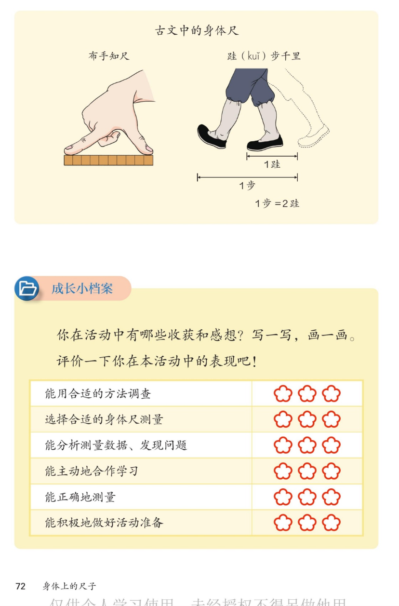

🔊 综合与实践 · 身体上的尺子 · 课本第 72 页 · 古文中的身体尺与成长小档案
人教版《数学》二年级上册 · 有声图文带读 · 先想后看解析 · 布手知尺 · 跬步千里 · 1步=2跬
题数
6
认知
2
强化
3
拓展
1
本页重点
布手知尺 · 跬步千里 · 1步=2跬 · 自我评价
🎧 分两步学：
① 解析教材图片
——纯声音读图，读到哪一块哪一块闪动提示；关键处先倒计时让你思考，再在图片下方给出解析并朗读。
② 分层提问练习
——六道分层题（认知 / 强化 / 拓展），先思考再展开解析、朗读参考答案；这一步不再回到图片。
也可以随时点任意一句话、图上任意一块单独听；点课本文字卡还会展开答案。
教材图片（点块听读，读到哪块哪块闪）

📖 人教版《数学》二年级上册 · 课本第 72 页 · 图片仅供个人学习，版权归人民教育出版社所有
🤔 想一想（点我可跳过）
课本的文字（点句子：听读 + 看答案）
古文一
布手知尺
看答案 ▾
意思是：
用布满手的拃数，量出一尺
；
古人把手当尺子，一拃一拃在布上量；
古代"一尺"的长短就和手的动作有关。
古文二
跬（kuǐ）步千里
看答案 ▾
跬
（kuǐ）＝半步，迈出一脚的距离；
跬步千里
：一步一步走，就能走一千里；
道理：
坚持
，再远的目标也能实现。
数量关系
1 步 = 2 跬
看答案 ▾
迈出
一只脚
＝ 1 跬；
另一只脚
跟上、两脚并齐＝又 1 跬；
两跬合起来才是完整的
1 步
，所以 1 步 = 2 跬。
成长小档案
六项自我评价
看答案 ▾
① 能用
合适的方法
调查；
② 选择
合适的身体尺
测量；
③ 能
分析测量数据
、发现问题；
④ 能
主动地合作
学习；
⑤ 能
正确地测量
；
⑥ 能
积极地
做好活动准备。每项最多三朵花。
分层提问练习（先想后看解析）
📜
认知
古文中的身体尺介绍了哪两句话？
看解析
🤔 想一想
解析：
布手知尺
：用手量布，布出一尺；
跬步千里
：一步一步，走出一千里。
📁
认知
成长小档案要做什么？
看解析
🤔 想一想
解析：
写一写、画一画
：收获和感想；
涂小花
：给自己六项表现打分。
🚶
强化
为什么 1 步 = 2 跬？说说道理。
看解析
🤔 想一想
解析：
迈出一只脚＝
1 跬
；
另一只脚跟上＝又 1 跬，两跬合起来＝
1 步
；
💡 可以边走边数：跬、跬、步，跬、跬、步
💪
强化
跬步千里这个词告诉我们什么道理？
看解析
🤔 想一想
解析：
千里之路由
一个个跬步
积累而成；
学习和做事也要
坚持积累
，天天进步一点点；
💡 千里之行，始于足下
🌸
强化
评价表有哪六项？小花怎么涂？
看解析
🤔 想一想
解析：
调查、选身体尺、分析数据、合作学习、正确测量、做好准备；
做到得好的涂
三朵
，一般的涂两朵或一朵，要诚实评自己。
🌈
拓展
从古文中的身体尺，你看出古人怎样的智慧？
看解析
🤔 想一想
解析：
没有尺子，就
用身体当尺子
，特别会想办法；
还把测量经验编成
四字古文
流传下来；
🌈 现在的尺子正是从这些老办法改进来的
① 解析教材图片
② 分层提问练习
⏹ 停止
纯声音 + 高亮跟随 · 想好才出解析
← 返回导航